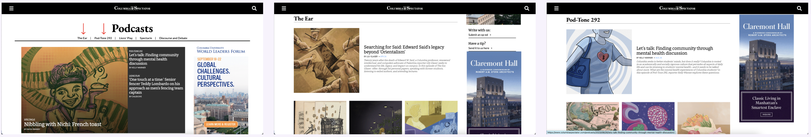
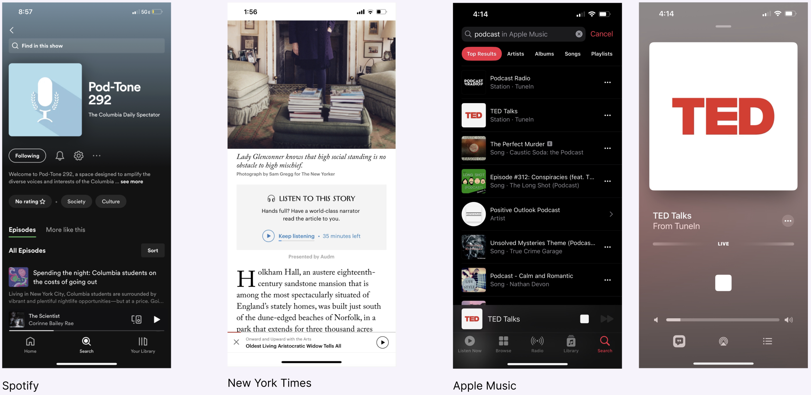
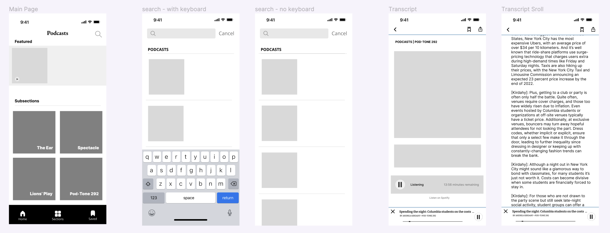
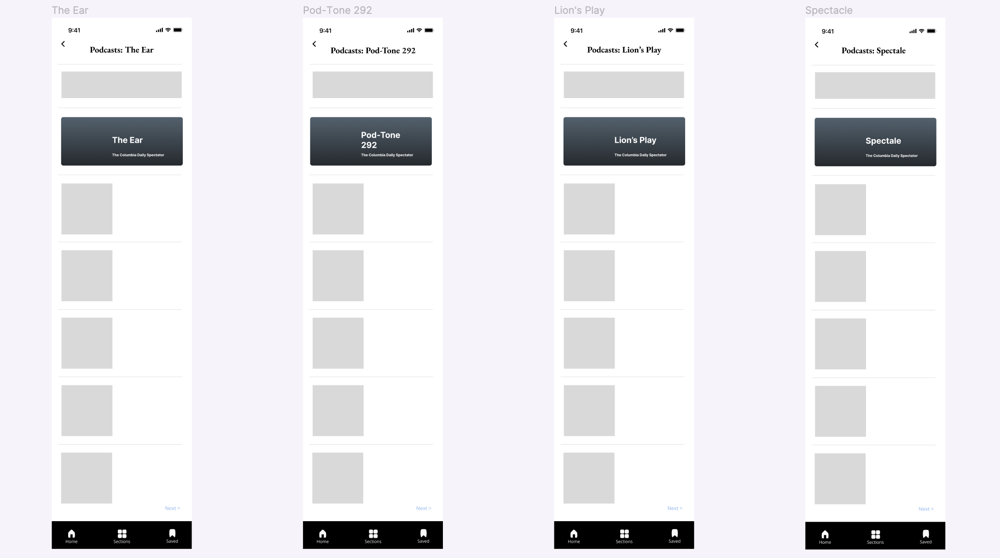

Podcast Section Mobile App Design Case Study
Team: Myself (Product Designer), Muchen Guo (Head of Product), Ariel Wu (Product Manager), Michelle Twan (Product Designer)
Company: Columbia Daily Spectator
Duration: February - April 2023
Tools: Figma
Overview
In this project, the Product Design team is committed to the transformation of the existing Columbia Daily Spectator website into a mobile app. My involvement started during the project's 2.0 phase, which includes the design of pages beyond the core Journalism sections. My responsibility was the design and adaptation of the Podcasts section into a mobile app interface that prioritizes simplicity and user-friendliness. Additionally, I was tasked with incorporating a feature allowing for in-app podcast playback.
1 - Current Website Design
The current podcase section first shows a featured podcast. The website has 5 sections on the navigation bar. The first four listed are the sections of the podcast, while the last one is special edition page. Clicking on the sections with the arrows will result on the two images depicted to the right.
2 - Research
To gain understanding of how to curate the podcast page, we performed a competitive analysis on these three well-known platforms: Spotify, New York Times, and Apple Music. Through our research, we assessed which features would be beneficial to integrate into our app to make it as user friendly and intuitive as possible. One primary feature that we saw in all three apps was the pop-up at the bottom when the podcast is played in order for users to pause, play, skip forward, and play back.
3 - Design Opportunities
- Homepage: This page showcases a featured podcast at the very top, along with by four organized
sections, offering users convenient podcast selection. Additionally, given our previously established Spotify page,
an accessible button can be provided for users to seamlessly transition to the Spotify platform.
- Section Pages: Each section page has an informative section description at the top, followed by
a list of podcasts. To enhance user experience and minimize scrolling, a "Next" button facilitates navigation to more podcasts.
- Transcript / Audio Page: A notable feature we aim to provide is the ability to enjoy podcasts
directly within the app, addressing the current limitation restricted to Spotify. This page incorporates a play
button at the top, initiating podcast playback. Furthermore, a sticky pop-up interface at the bottom allows users
to pause, play, skip forward, and rewind .
- Search Page: Users can conveniently use the the search button to easily find a particular podcast.
4 - Wireframe

5 - Prototype

This is the prototype of the final design. The home page has one feature article that would change periodically
along with the four section pages. Clicking into any of the four section pages would then show a new page with
the description of the section at the top followed with the list podcasts. Clicking into one of the podcasts,
the transcript page is shown with the podcast being available to play in the app. Buttons to save or share the
podcast are conviently located at the top right corner.
6 - Reflection
I had a genuine passion for working on this product as I knew it would benefit my community in their day-to-day lives once launched. The project is currently undergoing alpha testing within the company to identify and rectify any bugs before further beta testing is done through the public. I'm looking forward to seeing the trajectory of this project, and cannot wait to contribute further once we've gathered insights from our testing phases.